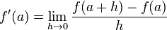

Homework 3
Due at 11:59:59 pm on Thursday, 2/15/2024.
Instructions
Download hw03.zip. Inside the archive, you will find starter files for the questions in this homework, along with a copy of the OK autograder.
Readings: This homework relies on following references:
Lists Review
Question 1: Adding matrices
Write a function that adds two matrices together using list comprehensions. The function should take in two 2D lists of the same dimensions. Try to implement this in one line!
def add_matrices(x, y):
"""
>>> matrix1 = [[1, 3],
... [2, 0]]
>>> matrix2 = [[-3, 0],
... [1, 2]]
>>> add_matrices(matrix1, matrix2)
[[-2, 3], [3, 2]]
>>> matrix4 = [[ 1, -2, 3],
... [-4, 5, -6]]
>>> matrix5 = [[-1, 2, -3],
... [ 4, -5, 6]]
>>> add_matrices(matrix4, matrix5)
[[0, 0, 0], [0, 0, 0]]
"""
"*** YOUR CODE HERE ***"
Use OK to test your code:
python3 ok -q add_matricesHigher Order Functions
Question 2: This Question is so Derivative
Define a function make_derivative that returns a function: the derivative of a
function f. Assuming that f is a single-variable mathematical function, its
derivative will also be a single-variable function. When called with a number
a, the derivative will estimate the slope of f at point (a, f(a)).
Recall that the formula for finding the derivative of f at point a is:

where h approaches 0. We will approximate the derivative by choosing a very
small value for h. The closer h is to 0, the better the estimate of the
derivative will be.
def make_derivative(f):
"""Returns a function that approximates the derivative of f.
Recall that f'(a) = (f(a + h) - f(a)) / h as h approaches 0. We will
approximate the derivative by choosing a very small value for h.
>>> def square(x):
... # equivalent to: square = lambda x: x * x
... return x * x
>>> derivative = make_derivative(square)
>>> result = derivative(3)
>>> round(result, 3) # approximately 2 * 3
6.0
"""
h = 0.00001
"*** YOUR CODE HERE ***"Use OK to test your code:
python3 ok -q make_derivativeQuestion 3: Reduce
Write the higher order function reduce which takes
reducer- a two-argument function that reduces elements to a single values- a sequence of valuesbase- the starting value in the reduction. This is usually the identity of the reducer
If you're feeling stuck, think about the parameters of reduce. This problem is meant to provide a hands-on experience of understanding what the function reduce from the functools library does.
from operator import add, mul
def reduce(reducer, s, base):
"""Reduce a sequence under a two-argument function starting from a base value.
>>> def add(x, y):
... return x + y
>>> def mul(x, y):
... return x * y
>>> reduce(add, [1, 2, 3, 4], 0)
10
>>> reduce(mul, [1, 2, 3, 4], 0)
0
>>> reduce(mul, [1, 2, 3, 4], 1)
24
"""
"*** YOUR CODE HERE ***"
Use OK to test your code:
python3 ok -q reduceQuestion 4: Smooth
The idea of smoothing a function is an important concept in signal
processing. If f is a one-argument function and dx is some small
number, then the smoothed version of f is the function whose value at
a point x is the average of f(x - dx), f(x), and f(x + dx).
Write a function smooth that takes as input a function f and a
value to use for dx and returns a function that computes the smoothed
version of f. Do not use any def statements inside of smooth; use
lambda expressions instead.
def smooth(f, dx):
"""Returns the smoothed version of f, g where
g(x) = (f(x - dx) + f(x) + f(x + dx)) / 3
>>> square = lambda x: x ** 2
>>> smoothed_square = smooth(square, 1)
>>> round(smoothed_square(0), 3)
0.667
"""
"*** YOUR CODE HERE ***"Use OK to test your code:
python3 ok -q smoothQuestion 5: I Heard You Liked Functions...
Define a function cycle that takes in three functions f1, f2,
f3, as arguments. cycle will return another function that should
take in an integer argument n and return another function. That
final function should take in an argument x and cycle through
applying f1, f2, and f3 to x, depending on what n
was. Here's the what the final function should do to x for a few
values of n:
n = 0, returnxn = 1, applyf1tox, or returnf1(x)n = 2, applyf1toxand thenf2to the result of that, or returnf2(f1(x))n = 3, applyf1tox,f2to the result of applyingf1, and thenf3to the result of applyingf2, orf3(f2(f1(x)))n = 4, start the cycle again applyingf1, thenf2, thenf3, thenf1again, orf1(f3(f2(f1(x))))- And so forth.
Hint: most of the work goes inside the most nested function.
Hint 2: given n, how many function calls are made on x?
Hint 3: for help with how to cycle through the
functions (i.e., how to go back to applying f1 as your outermost
function call when n = 4), consider looking at
this Python Tutor demo
which has similar cycling behaviour.
def cycle(f1, f2, f3):
""" Returns a function that is itself a higher order function
>>> def add1(x):
... return x + 1
>>> def times2(x):
... return x * 2
>>> def add3(x):
... return x + 3
>>> my_cycle = cycle(add1, times2, add3) # f1 = add1, f2 = times2, f3 = add3
>>> identity = my_cycle(0) # n = 0
>>> identity(5) # return x, where x = 5
5
>>> add_one_then_double = my_cycle(2) # n = 2
>>> add_one_then_double(1) # return f2(f1(x)), where x = 1
4
>>> do_all_functions = my_cycle(3) # n = 3
>>> do_all_functions(2) # return f3(f2(f1(x))), where x = 2
9
>>> do_more_than_a_cycle = my_cycle(4) # n = 4
>>> do_more_than_a_cycle(2) # return f1(f3(f2(f1(x)))), where x = 2
10
>>> do_two_cycles = my_cycle(6) # n = 6
>>> do_two_cycles(1) # return f3(f2(f1(f3(f2(f1(x)))))), where x = 1
19
"""
"*** YOUR CODE HERE ***"Use OK to test your code:
python3 ok -q cycleQuestion 6: The Word Guessing Game
Write a higher order function called store_word that takes in a secret word. It will return the length of the secret word and another function, guess_word, that the user can use to try to guess the secret word.
Assume that when the user tries to guess the secret word, they will only guess words that are equal in length to the secret word. The user can pass their guess into the guess_word function, and it will return a list where every element in the list is a boolean, True or False, indicating whether the letter at that index matches the letter in the secret word!
def store_word(secret):
"""
>>> word_len, guess_word = store_word("cake")
>>> word_len
4
>>> guess_word("corn")
[True, False, False, False]
>>> guess_word("come")
[True, False, False, True]
>>> guess_word("cake")
[True, True, True, True]
>>> word_len, guess_word = store_word("pop")
>>> word_len
3
>>> guess_word("ate")
[False, False, False]
>>> guess_word("top")
[False, True, True]
>>> guess_word("pop")
[True, True, True]
"""
"*** YOUR CODE HERE ***"Use OK to test your code:
python3 ok -q store_wordSubmission
When you are done, submit your file to Gradescope. You only need to upload the following files:
hw03.py